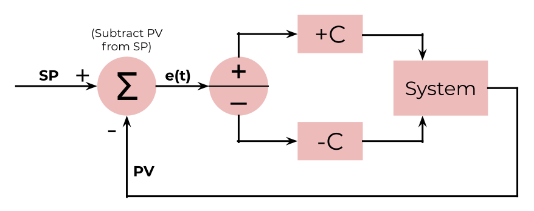

PIDeconstructed
Getting from Point A to Point B
Many mechanical component or industrial system you see today uses PID Control or some variant of it, commonly used for controlling the speed, temperature, pressure, or really anything controllable and measurable. Well, what is PID?
PID Control is a feedback-loop control system that stands for Proportional-Integral-Derivative Control and uses the following formula:
\[ CO(t) = K_{p}e(t) + K_{i}\int_0^t e(t) \,dt + K_{d}e'(t) \]
If you don't have any experience with calculus, this formula might seem a bit daunting at first, but hopefully it will be easier to digest by the end of this; all you'll need is some algebra. First, before we get our hands wet with simulations, I'll have to bore you a bit with what a control system is and how it works.
Control System Basics
When a car wants to get to a certain speed or a furnace wants to get to the right temperature, we need a feedback loop, where the controller is constantly adjusting based on the current value. PID is one type of control system that uses a feedback loop.
Any control system has two important values: the setpoint (SP), which is the target valueou want to get to, and the proccess variable (PV), or the current value measured by a sensor that you want to get closer to the setpoint. The difference between the setpoint and process variable is the error (e). The goal of ay control system is to reduce the error ideally to 0. Because all these values may be constatly changing with time, it's usually written as a function of time instead of as a variable.
\[ e(t) = SP(t) - PV(t) \]
Before delving into actual PID, let's take a look at a more naive control system as a example: bang-bang (BB) control. In BB control, when \(PV < SP\) (the error is positive), the controller output (CO) will be set to positive 1: forward, and when \(PV > SP\) (the error is negative), the controller output will be set to -1: reverse. This means that our controller only has two discreet states (technically 3, but an error of zero is unrealistic).
\[ CO(t) = \begin{cases} -C, & e(t)<0 \\ C, & e(t)>0 \\ 0, & e(t)=0 \end{cases} \, \, \, \, \text{where C is a constant} \]
Let's take the example of a car, which will start 10 meters from a parking spot and will try to get as close as possible. Let's pretend that the controller can set the acceleration of the car instantaneously forward and backward up to 1 m/s2. This is a very simplistic model, but it should work for the purpose of this.
Let's take a look at BB Control in action! Pay attention to the error, acceleration, and velocity, and play around with the sliders:

Time: 0.00 s
SP: 10.00m
PV: 0.00 m
Error: 10.00 m
Acceleration: 0.00 m/s2
Velocity: 0.00 m/s
Controls
As you can see, it's not great. After all, it's not like you start braking right when you hit the crosswalk; a good control system needs some amount of prediction. Bang-bang control tends to osscilate indefinitely. You can decrease the max speed to minimize overshoot, but then it takes much longer.
Instead of this clunky animation, let's use a graph. The horizontal axis will show how much time has elapsed in seconds, vertical axis will show displacement. The blue dashed line shows the target setpoint, and the red line shows the proccess variable over time. An additional green line will show the error over time. The closer the error is to 0, the better.
Time: 0.00 s
SP: 10.00m
PV: 0.00 m
Error: 10.00 m
Acceleration: 0.00 m/s2
Velocity: 0.00 m/s
Controls
Often, we will want to use flow diagrams to show the mechanics of a control system. In this diagram, the control system will take the setpoint and measured process variable from the sensor and calculate an error. If the error is positive, the controller will output a positive value to the process, in this case the car's wheel motors, and accelerate it forward. Vice versa for reverse. The sensor then measures the process variable and sends it back to the control system. With this feedback loop, the control system will attempt to adjust to get PV as close to SP as possible.
As you can see, bang-bang control isn't great due to the constant oscillations. While this may be acceptable for an average waterheater or thermostat where swiftness and precision aren't the most important, more precise control systems such as PID would be better.
Part 1: P Controller
Let's start with a P controller. The p stands for proportional, meaning the control input will be proportional to the error. This means that if SP is way above PV, the controller will output a large positive value, giving a large acceleration; if SP is only slightly above PV, the controller will output a small position value, giving a small acceleration. The opposite for negative.
Let's put it in numerical terms. If we make the controller output equal to the error, this will achieve the desired results. However, we want to multiply the error by a constant to scale it down if we want to make it faster or slower. This constant is called the proportional gain, symbolized by \(K_{p}\).
Here is ther first part of our equation. As you can see, the controllers output (\(CO(t)\)) is directly proportional to the error.
\[ CO(t) = K_{p}e(t) \]
Try getting a feel for a P controller in this simulation. Adjust the proportional gain and see what happens:
Simulation with P adjustable